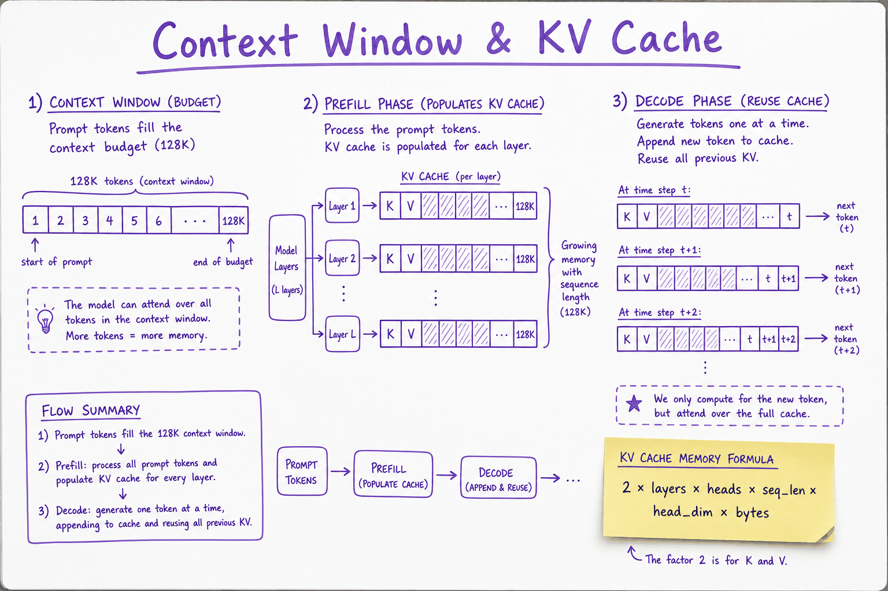
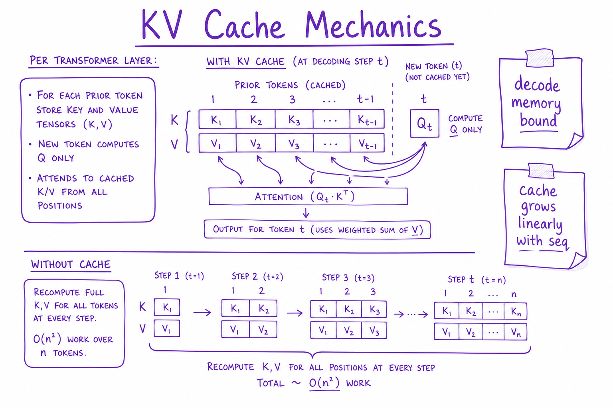
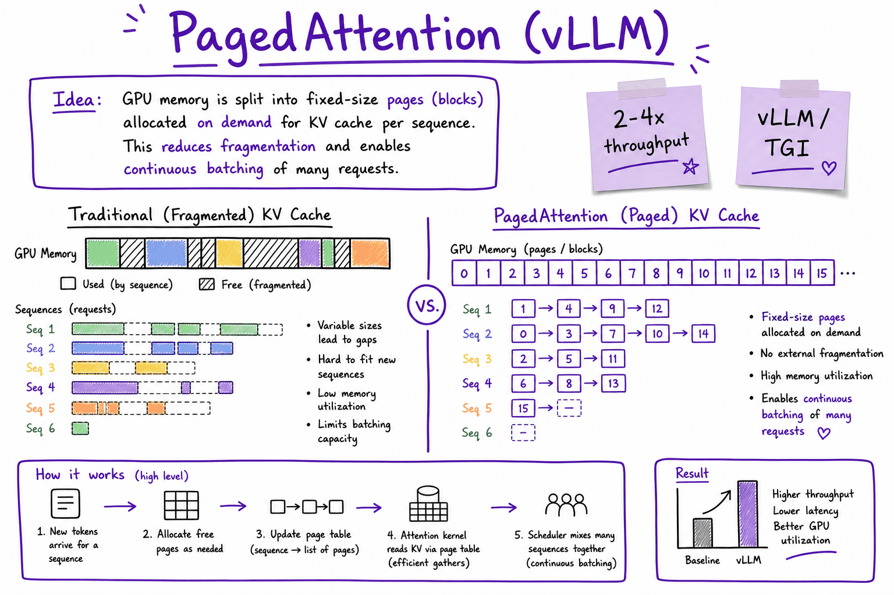

Context Window & KV Cache // Fundamentals
How context limits, prefill vs decode, KV cache memory growth, GQA, and PagedAttention determine latency, cost, and max concurrent users on GPU inference.

Prompt tokens fill the context budget during prefill while KV cache grows per layer; decode appends one token at a time reusing cached keys and values.
01 — What & Why
Context window caps prompt+completion tokens. KV cache stores per-layer key/value tensors for prior tokens so decode doesn't recompute full attention. Dominates GPU memory at long context and high concurrency.
Token counting: Tokenization & Context. Serving: Model Serving (vLLM).
01a — Core Concepts
| Term | Definition | Gotcha |
|---|---|---|
| Context window | Max total tokens in/out | Shared budget |
| KV cache | Stored K,V per layer per token | Grows linearly with seq |
| Prefill | Process prompt in parallel | Sets TTFT |
| Decode | One token per step | Memory bandwidth bound |
| PagedAttention | Paged KV blocks in vLLM | Reduces fragmentation |
| GQA | Grouped-query attention | Fewer KV heads |
01b — API Surface
# HuggingFace generate with cache
outputs = model.generate(
input_ids,
max_new_tokens=256,
use_cache=True, # KV cache enabled
)
# past_key_values returned for incremental decode02 — When to Use / When NOT
| Tactic | Use | Skip |
|---|---|---|
| Long doc Q&A | 200K context model OR RAG | Stuff 500 pages raw |
| KV cache | Always at decode | Training (recompute activations |
| PagedAttention | Multi-tenant serving | Single-request local |
| Prompt caching API | Repeated system prefix | Unique prompts |
03 — Architecture
Prefill: all prompt tokens -> fill KV[layer, 0:prompt_len]
Decode step t: compute Q_t; attend K,V[0:t]; append KV_t; sample token04 — Deep Dive: Context Window
Models advertise 128K, 200K, 1M — check effective quality at extreme lengths (needle tests). Long context costs linear $ and super-linear prefill compute. RAG often cheaper than 1M stuffing.
05 — Deep Dive: KV Cache Mechanics

Per layer: cache K and V for all prior tokens; new token only computes Q and attends to cached K/V.
Without cache, each decode step recomputes attention over full history — O(n²) per step catastrophe.
06 — Deep Dive: Prefill vs Decode
Prefill: compute-bound matmuls over prompt length → TTFT.
Decode: memory-bound KV reads → tokens/sec. Long prompts hurt TTFT; long answers hurt total time and KV size.
07 — Deep Dive: PagedAttention

vLLM allocates KV cache in non-contiguous pages like OS virtual memory; enables continuous batching.
See Model Serving (vLLM). 2-4× throughput vs naive static batching.
08 — Deep Dive: GQA / MQA
Share K/V heads across query head groups. Cuts KV memory 4-8× with minimal quality loss. Llama 3, Mistral use GQA for long-context serving economics.
09 — Production & Ops
- Cap max context per tier
- Monitor KV memory utilization on GPU
- Continuous batching for throughput
- Truncate with Tokenization & Context before API
10 — Where It Shows Up
11 — Common Pitfalls
- Assuming 128K means fast 128K prefill
- Ignoring KV memory at high concurrency
- Disabling cache in custom inference
- Stuffing context instead of RAG
- Not reserving completion token headroom
12 — Interview Q&A
What is KV cache?
KV cache memory formula?
Prefill vs decode latency?
Why long context is expensive?
PagedAttention benefit?
GQA vs MHA for serving?
Context window vs usable context?
OpenAI prompt caching?
When disable KV cache?
128K prompt on 80GB GPU?
Relate to RAG?
SDE3: serve 500 concurrent chat users?
Go deeper
The long-form chapters and course parts that cover this topic in full, with worked examples and exercises.